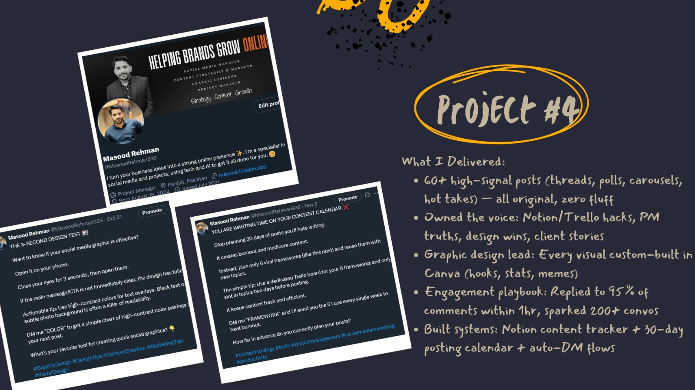

Project 4: X Growth & Community Engine
Social Media Strategist & Community Manager
Transformed The Media Spark Studio’s X presence into a high-engagement growth channel and active creator community. Led voice, visuals, and engagement systems to build authentic connections and consistent visibility.
Features:
- 60+ high-signal posts (threads, polls, carousels, hot takes) — all original, zero fluff
- Owned brand voice: Notion/Trello hacks, PM truths, design wins, client stories
- Custom-built visuals: Created in Canva — hooks, stats, memes, branded graphics
- Engagement system: Replied to 95% of comments within 1 hour; sparked 200+ conversations
- Operational systems: Notion content tracker, 30-day posting calendar
Gallery:

Back to Portfolio